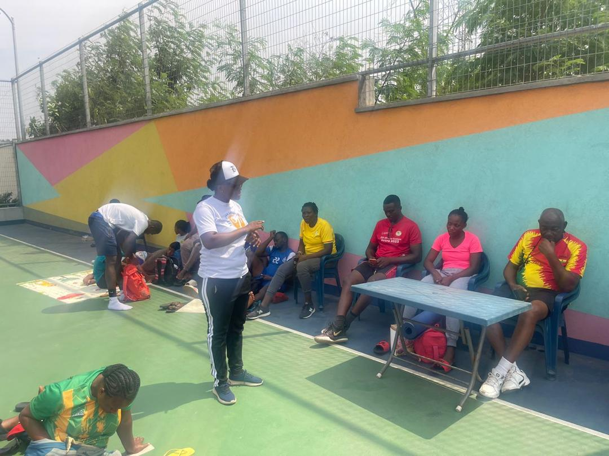

✝️
Spiritual Guidance
As a Pastor and Sports Chaplain, we are committed to nurturing the spiritual well-being of athletes,
coaches, officers, and sports administrators. We provide Christ-centered spiritual guidance that
strengthens faith, builds godly character, and equips individuals to face both personal and
professional challenges with wisdom, courage, and integrity.
Through biblical counseling, prayer, mentorship, devotional sessions, and pastoral care, we help
individuals develop spiritual resilience, maintain emotional balance, and discover their God-given
purpose. Our mission is to inspire excellence on and off the field by fostering values such as
discipline, teamwork, humility, perseverance, and servant leadership.
We believe that true success is achieved when physical ability is complemented by spiritual strength.
Therefore, we are dedicated to walking alongside every athlete and officer, offering hope,
encouragement, and practical biblical principles that empower them to excel in their careers while
honoring God in every aspect of life.

🏅
Counseling Services
We provide professional, confidential, and compassionate counseling services tailored to the unique
needs of athletes, officers, coaches, and their families. Our counseling approach integrates biblical
principles, emotional support, and practical guidance to promote healing, personal growth, and overall
well-being.
Whether facing personal struggles, career pressures, emotional challenges, relationship difficulties,
or life transitions, we offer a safe and supportive environment where individuals can receive wise
counsel, encouragement, and hope.
Our goal is to foster sustainable transformation by developing strong character, emotional resilience,
spiritual maturity, and personal accountability. We empower officers and athletes to overcome
challenges with wisdom, grace, integrity, and confidence, enabling them to excel both in their
professional responsibilities and personal lives.
Through individual counseling, crisis intervention, family support, and follow-up care, we remain
committed to restoring hope, strengthening lives, and helping every individual fulfill their
God-given purpose.